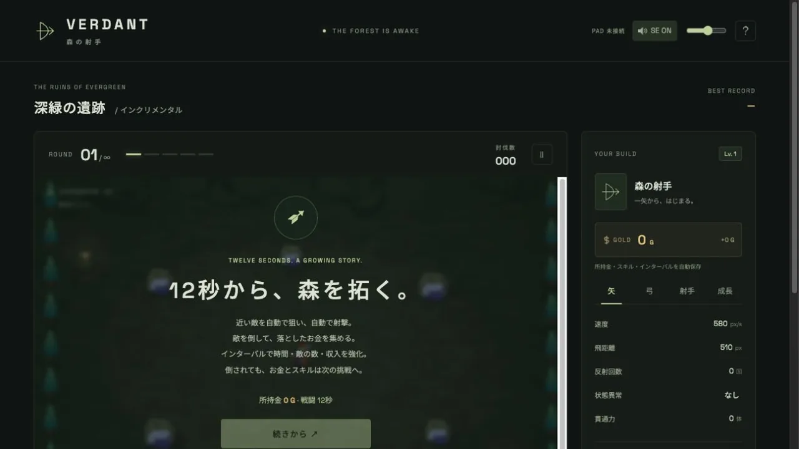
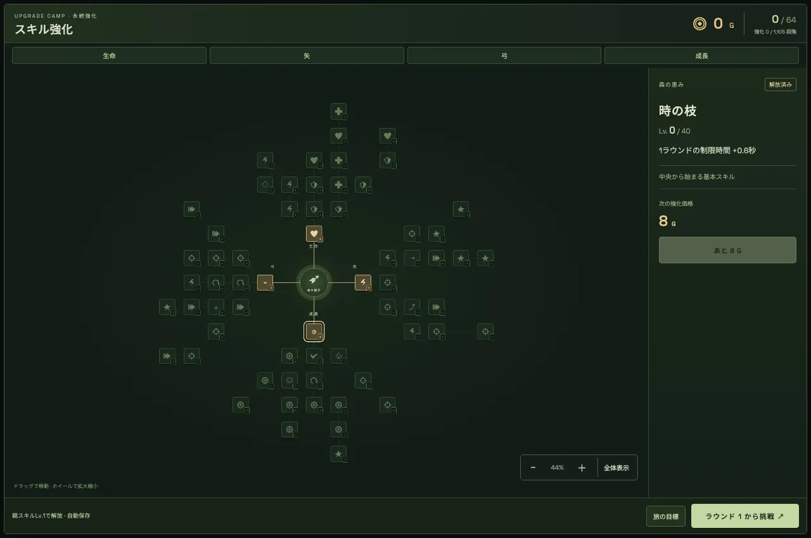
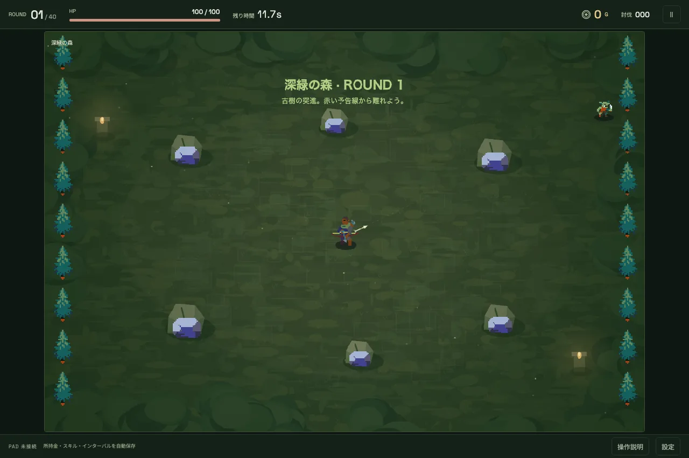
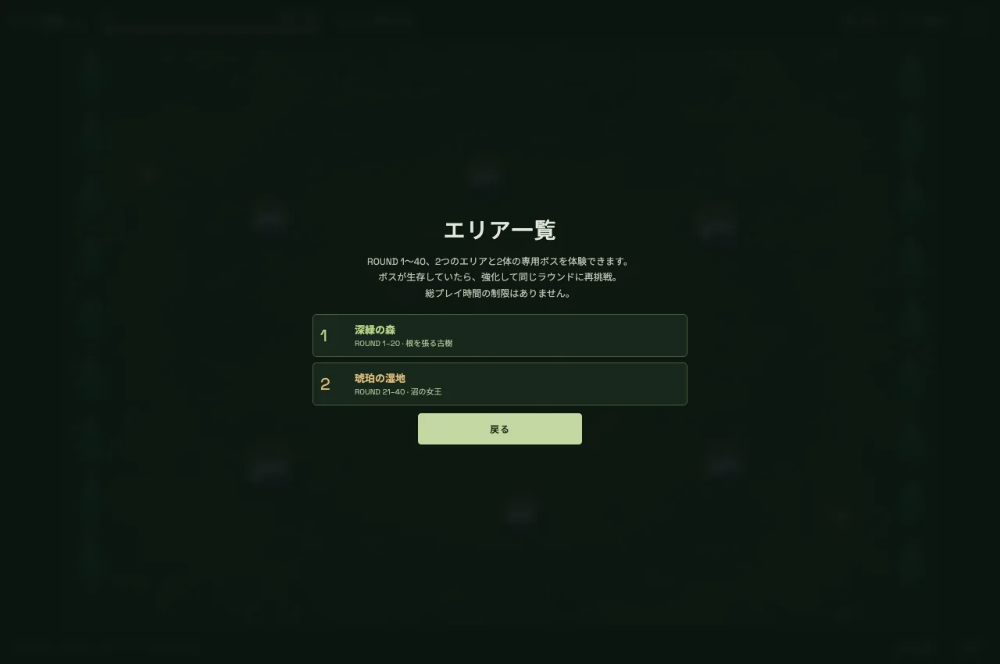
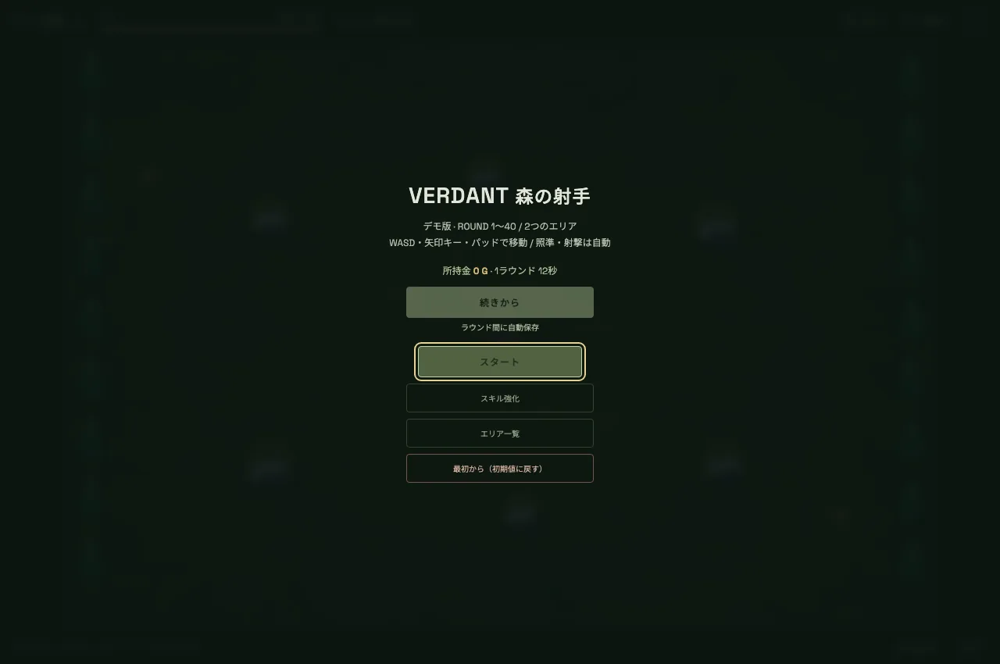

INCREMENTAL BOW ACTION · FREE DEMO
12秒から、 森を拓く。
一番近い敵に自動で狙いを定め、自動で射ちます。あなたがするのは、動くことと、育てることだけ。1ラウンドは12秒から始まり、強化するたびに伸びていきます。
照準も射撃も自動
64種のスキルツリー
倒されても次へ持ち越す
ブラウザで遊べる
体験版を見る
ROUND 1〜40 · 2エリア · 無料

HOW IT PLAYS
撃つ手は要りません。要るのは、どこに立つか。
動いて、集める
矢は勝手に飛びます。あなたは敵の間を抜け、倒した敵が落としたお金を拾って回ります。赤い予告線から離れるのが、立ち回りのすべてです。
12秒を、伸ばしていく
最初のラウンドは12秒で終わります。スキルを1つ取るごとに 0.6 秒ずつ伸び、倒せる数も、入るお金も増えていきます。短さが、そのまま伸びしろです。
倒されても、無駄にならない
やられても、お金とスキルはそのまま残ります。強化してから同じラウンドへ戻れます。進めなくなることがありません。
SKILL TREE
4方向へ、64種。
中央の「森の射手」から、生命・矢・弓・成長の4方向へ枝が伸びます。射つ速さ、矢の数、跳ね返り、毒や凍結、入るお金。どれを先に伸ばすかで、同じラウンドの通り方が変わります。ラウンドの合間にいつでも開けて、取った分は自動で保存されます。

スキル強化の画面。ドラッグで動かし、ホイールで拡大縮小できます
SCREENS
深緑の森から、琥珀の湿地へ。



FREE DEMO
体験版は、ブラウザですぐ遊べます。
- ROUND 1〜40。深緑の森と琥珀の湿地、専用ボス2体
- 64種のスキルはすべて開放。総プレイ時間の制限はありません
- インストール不要。ブラウザで遊べます
- キーボード・ゲームパッド・画面上のスティックに対応
- ラウンドの合間に自動保存。セーブはブラウザの中に残ります
体験版
無料
itch.io と unityroom で公開しています。
itch.io で遊ぶ unityroom で遊ぶ40ラウンドの沼の女王を倒して生還すると、デモはそこで区切りです。クリア後も強化を引き継いで、何度でも挑戦できます。